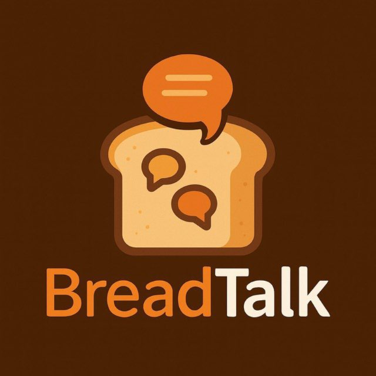
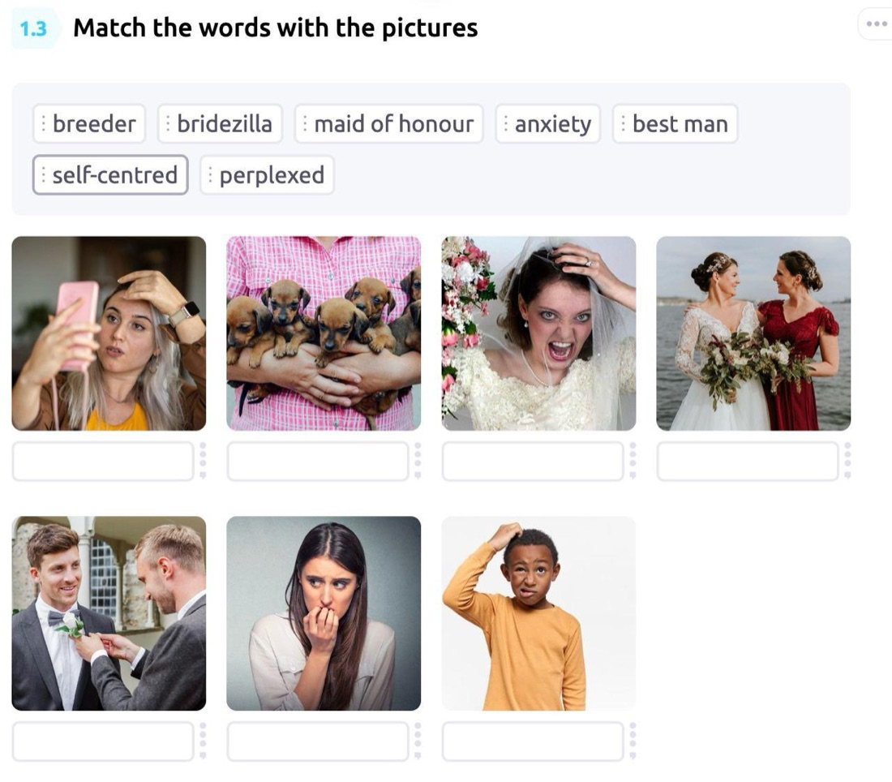
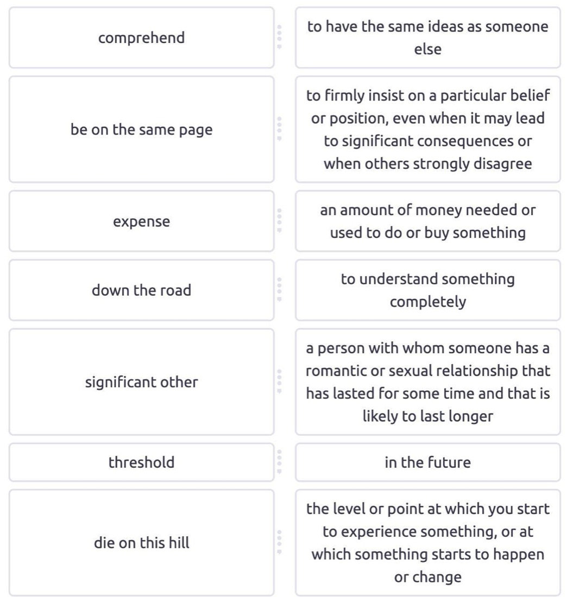
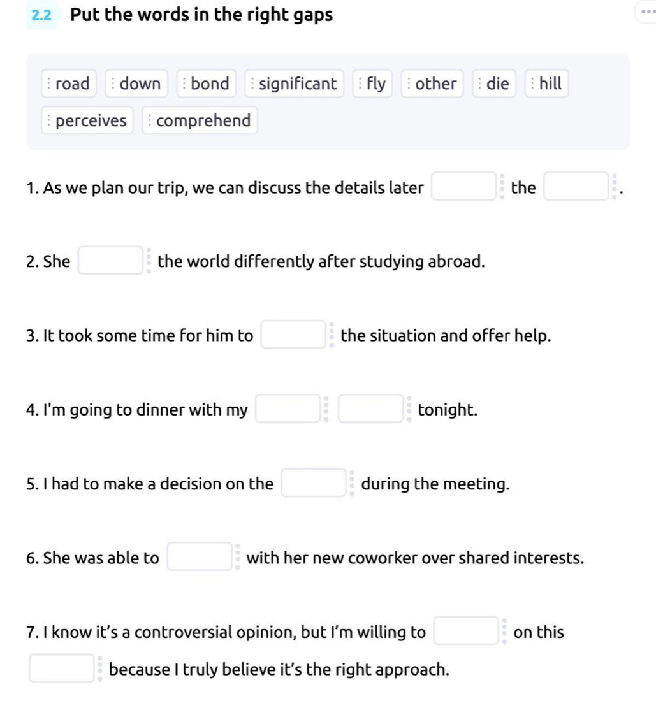
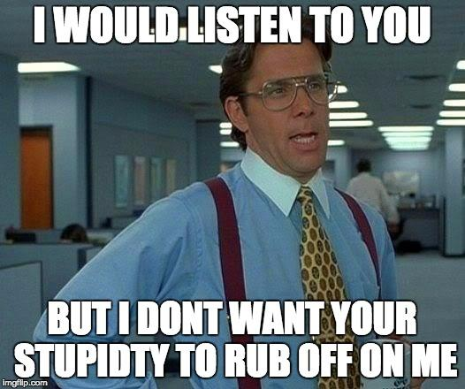

Индивидуальные занятия, группы и разговорный клуб — выбирайте формат под свою цель и уровень.
Немного о моём опыте и подходе к преподаванию.
Привет! Меня зовут Александр, я преподаю английский язык и помогаю ученикам не просто выучить грамматику, а начать свободно говорить и понимать живую речь.
Веду индивидуальные занятия под конкретные цели — от нуля до разговорного уровня, подготовка к экзаменам, английский для работы. Провожу групповые занятия для тех, кому важна поддержка и атмосфера общего прогресса. А ещё веду разговорный проект, где мы смотрим видео на английском и разбираем живую лексику.
«Я не объясняю английский с чужих слов — я сам набил все шишки на этом пути и помогаю другим пройти его быстрее».
Формат один на один — программа полностью под вас.
Из анонимного опроса студентов, октябрь 2025. Все 4 ответивших назвали домашние задания полезными.
Небольшие группы с похожим уровнем — атмосфера, мотивация и практика общения.
Из анонимного опроса студентов, октябрь 2025. Все 7 ответивших назвали домашние задания полезными.
Еженедельный международный разговорный клуб. Главная цель изучения английского для большинства — говорить, и именно этим мы занимаемся.

Разговорный проект для тех, кто хочет прокачать английский актуальными фразами и выражениями, которых не найти в учебниках — через живое применение в речи, а не упражнения.
Смотрим видео, отрабатываем лексику в разных упражнениях, а на встрече практикуем: обсуждаем и само видео, и личный опыт. Нажмите на картинку, чтобы увеличить.



Отзывы участников проекта из Telegram-канала.
Разборы лексики, анонсы групп и разговорного клуба, живые примеры из английского.
Так выглядят посты в канале — попробуйте угадать значение. Таких разборов в канале более 150.

Прикрепляю мем — проанализируйте контекст и выберите правильное значение ниже 👇
rub off on
Anonymous Quiz
😌 RUB OFF ON Есть люди рядом с которыми ты меняешься сам того не замечая. Их привычки, настроение, энергия — незаметно "прилипают" к тебе просто от постоянного общения. Вот это и есть rub off on — когда что-то (хорошее или не очень) передаётся от одного человека к другому просто через близость, без всяких усилий. Работает и в плюс, и в минус — можно "заразиться" чужим энтузиазмом, а можно и дурными привычками 😄 🎬 Смотрим видео — слышим вживую, забираем в копилку 👀
Здесь я разбираю лексику из фильмов и видео, делюсь полезными фразами и рассказываю про индивидуальные, групповые занятия и разговорный клуб.